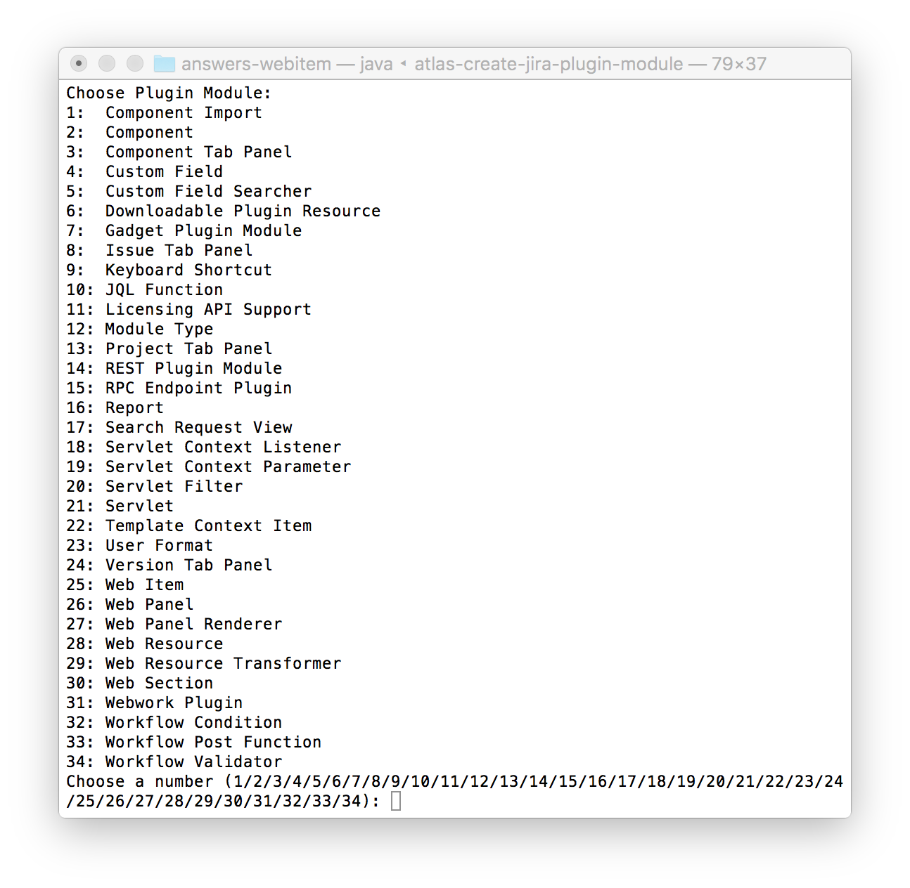
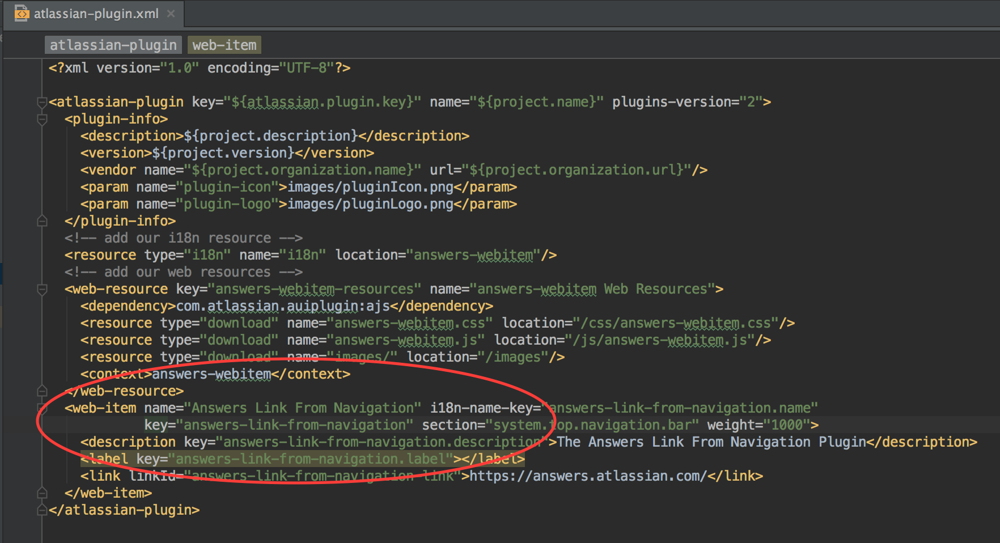
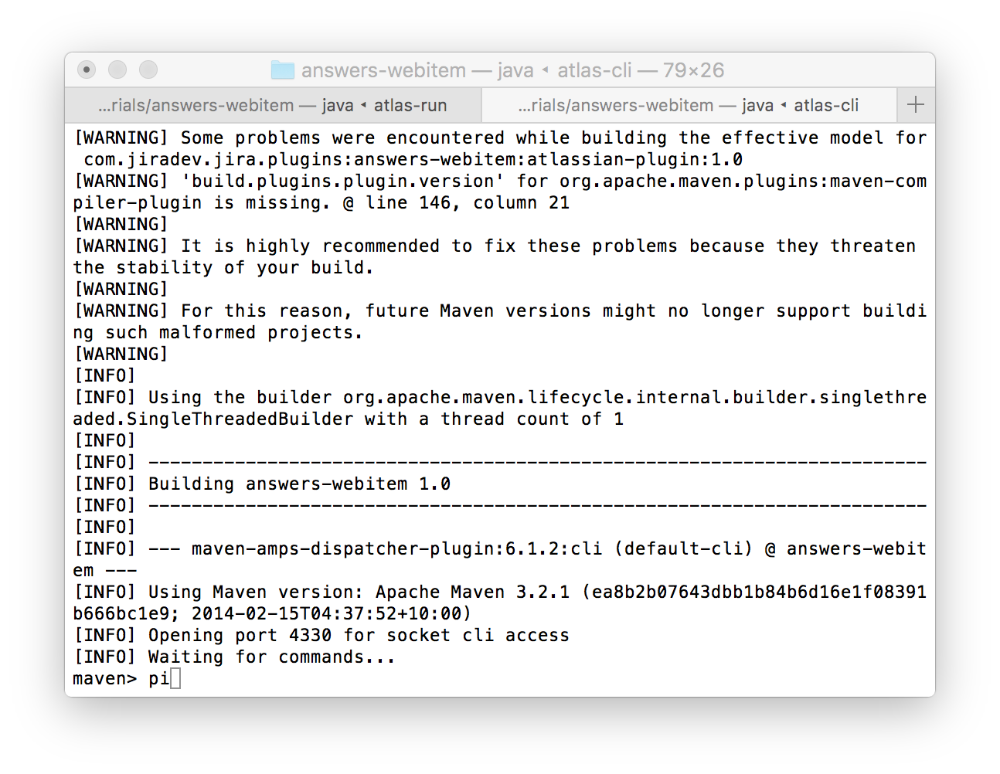

Web Item Plugin Module
Let us get started with probably the most simple of all plugin modules. The web item plugin module. This allows us to add links in different locations of the JIRA UI. We will add a link to the Atlassian Answers community page from two different locations.
Adding a link to the top navigation bar
- Start by creating a plugin skeleton. If you have not finished
the tutorial for creating a plugin skeleton, click here. Enter the information below.
groupId: com.jiradev.jira.plugins
artifactId: answers-webitem
version: 1.0
-
You should now have a new folder called answers-webitem. Within this folder, execute the command atlas-create-jira-plugin-module.

-
Select option 25 for Web-item and enter the info provided below.
Enter plugin module name: Answers Link From Navigation
Enter section: system.top.navigation.bar (Refer to this link)
Enter link URL: https://answers.atlassian.com/
Show advanced setup: N
Add another plugin module: N

- Run the JIRA instance using the command atlas-run. You will now see the new link we just created.
- But what if we want to make the link visible only to users who are logged in? We can add conditions to web-items. Till this point, we did not have to make any changes to code or any of the data generated by Atlas SDK. But from this point on, using an IDE will make editing these files much easier. The IntelliJ IDEA IDE has been my preferred IDE as it allows me to easily open projects and setup a remote debugger without any configuration. I will be using Idea throughout these tutorials. However, the Atlassian Developer site provides information to setup your IDE if you are using Eclipse or Netbeans. Have a look at the link here.
Opening your project in IntelliJ Idea IDE
- Start the IDE and choose to "Open Project". Choose the pom.xml file from your project directory.

-
Let us take a quick look at the project structure. The src directory contains a folder called main. The main folder
contains two folders called java and resources. Java folder will contain all your source code. Resources folder will
contain javascript, images and mainly your plugin definition file named atlassian-plugin.xml.

- Take a look at the atlassian-plugin.xml file. When you ran the atlas-create-jira-plugin-module command, the SDK
has created the definition of the web-item here for you.
 - You will also notice several other modules the atlas-create-jira-plugin command would have created as a sample. We do not
require all these modules to be published as part of our plugin. Let us clean it up and keep only what is required. We are
interested only in the plugin-info, the i18N resource file and the web-item definition.
Cleanup the atlassian-plugin.xml. Below is a cleaned up version.

Making some changes to your plugin
Great. So we now have an idea about the pom.xml and the atlassian-plugin.xml files. Let us continue making some changes to the web-item we are working on. Firstly, the link is being displayed as "Atlassian link fron navigation". Let us change this to be displayed as "Atlassian Answers". Secondly, we will display it only to users who have logged into JIRA.
- Open the atlassian-plugin.xml file and take a look at the web-item definition. The web-item has a label property.
These are defined in the file atlassian-webitem.properties file located in your resources folder. Open the properties file
and look for the key being used by the label. ie, answers-link-from-navigation.label and update it's value to "Atlassian Answers".

-
Now let us add a condition such that the link is displayed only to logged in users. Open the atlassian-plugin.xml and
add the condition. There are several conditions available. Click here to take a look.

Reloading your changes
Once you have made changes to your plugin, you need to recompile and upload the plugin again. Atlassian SDK provides two ways of doing this. Through the UI using FastDev or through command line using the atlas-cli command.
Using Fastdev
- On the bottom left corner of your running JIRA instance, you will find an option to expand the developer toolbar.

Click on it to view the developer toolbar. - On the right hand side of the developer toolbar, you will find the option to "Scan for changes to source code needing a recompile
then reload" option. Click to recompile and reload.

Using command line
- With the current command prompt where atlas-run is running being open, open a new instance of command prompt and change to your project directory.
- Run the atlas-cli command. When prompted with maven>, type "pi" and press enter.

Awesome. You have just completed writing a web-item with a condition. You know about the directory structure of a JIRA plugin, the atlassian-plugin.xml file where the plugins are defined. Great first steps. In the next tutorial, we will take a look at web-sections and place the same link under a web-section.
If you found this tutorial helpful, please show your support by tweeting about this tutorial.